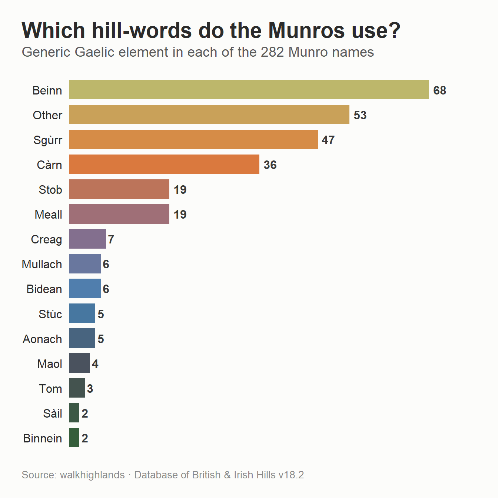
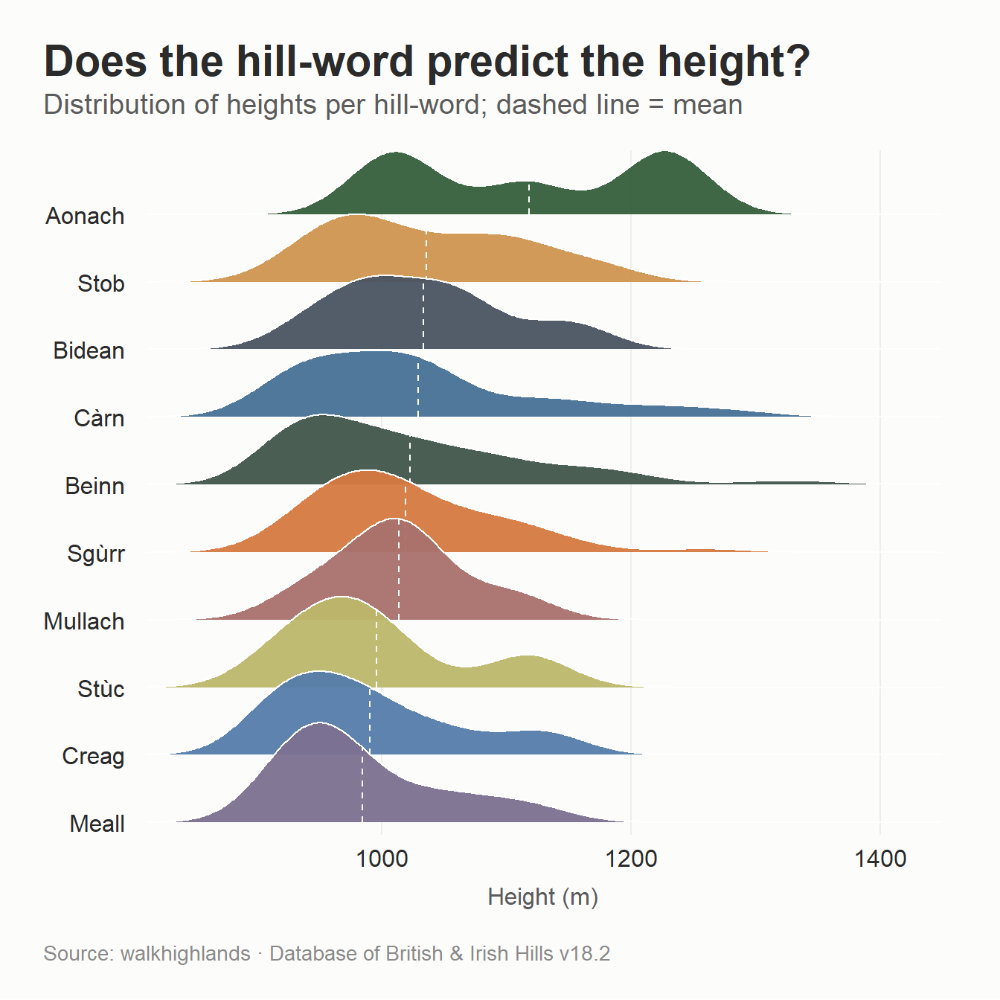
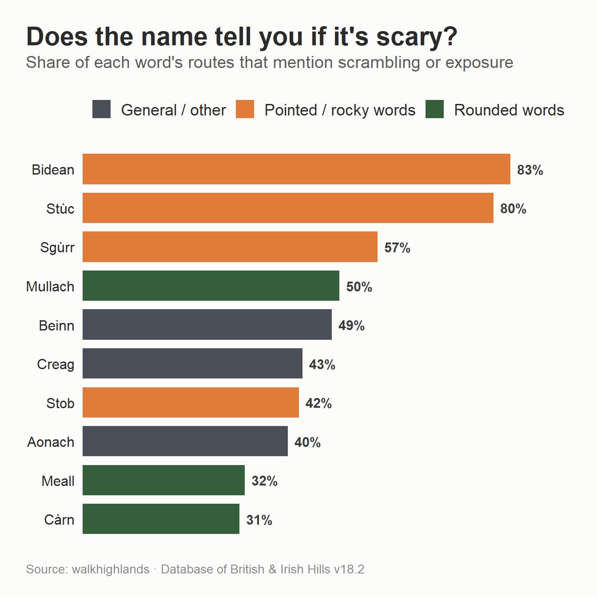
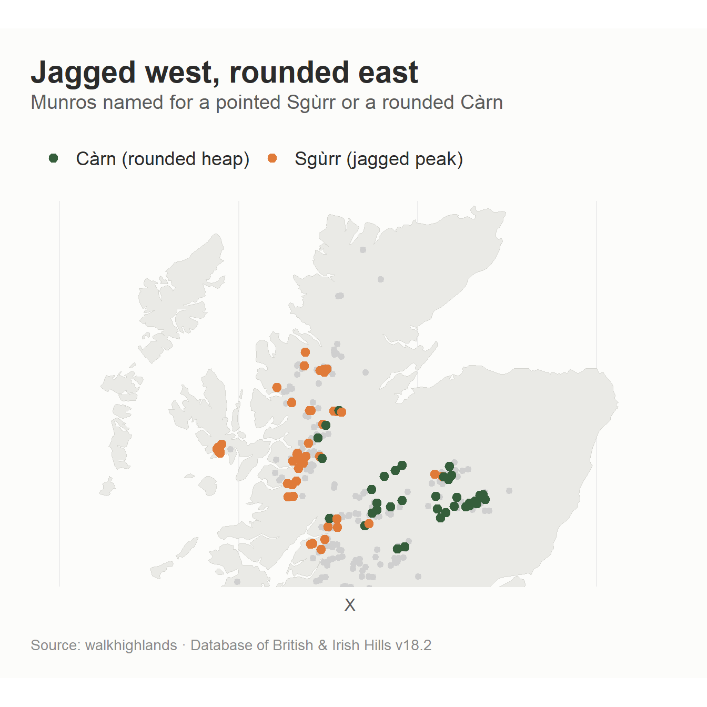
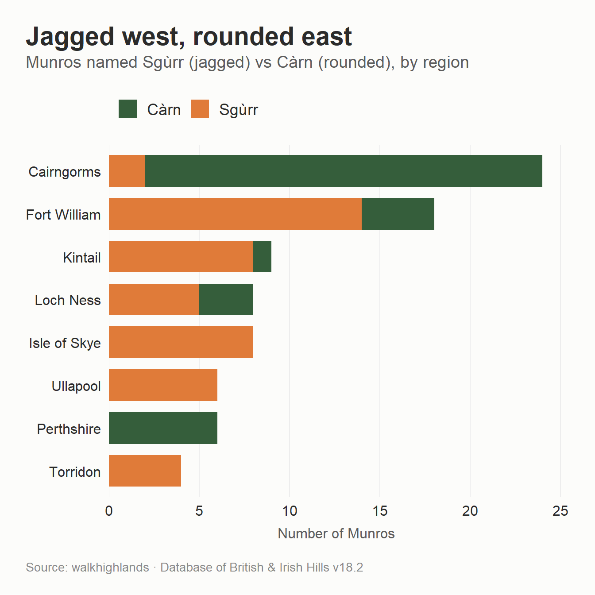
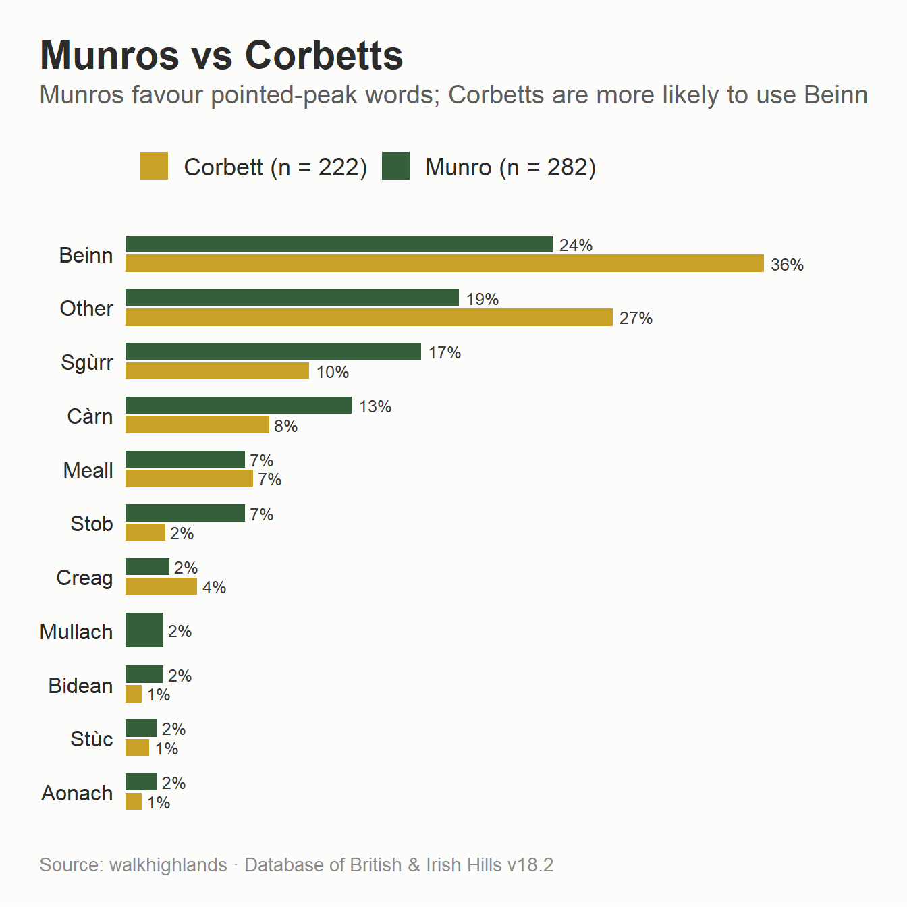

A while back I fell down a rabbit hole combining the Database of British and Irish Hills with route information scraped from walkhighlands. I’ve seen quite a few analyses of the most common Munro names and their meaning in Gaelic but I realised that the dataset from walkhighlands should allow me to go beyond what I’ve seen before.
I’m reusing the combined dataset from the previous post so please see that for details on how it was done. Whilst my wife and her family are Gaelic speakers, I am not and this blog uses Mark Jackson’s glossary for the Cambridge University Hillwalking Club and Peter Drummond’s Scottish Hill Names for the translations.
Most Munro names follow the same grammar: a generic word telling you what kind of hill it is, usually followed (or preceded) by a qualifier describing it - a colour, a size, an animal, a saint. Here are the most common generic names.
Show code
tibble::tribble(~Element, ~Meaning,"Beinn (Ben)", "The generic word for a mountain, especially a big one","Sgùrr (Sgòrr, Sgòr)", "A jagged, pointed, rocky peak - mostly in the west","Càrn (Cairn)", "A heap of stones; by extension a rounded stony hill","Stob", "A point or peak (literally a stake or stump)","Meall", "A bare, rounded, lumpy hill","Mullach", "A summit or top","Aonach", "A high ridge","Creag", "A crag or rockface","Bidean (Spidean)", "A sharp pinnacle or peak","Stùc", "A steep little peak or pinnacle","Binnein", "A conical peak","Maol", "A bald, bare, rounded hill") |>flextable() |>autofit()
Element
Meaning
Beinn (Ben)
The generic word for a mountain, especially a big one
Sgùrr (Sgòrr, Sgòr)
A jagged, pointed, rocky peak - mostly in the west
Càrn (Cairn)
A heap of stones; by extension a rounded stony hill
Stob
A point or peak (literally a stake or stump)
Meall
A bare, rounded, lumpy hill
Mullach
A summit or top
Aonach
A high ridge
Creag
A crag or rockface
Bidean (Spidean)
A sharp pinnacle or peak
Stùc
A steep little peak or pinnacle
Binnein
A conical peak
Maol
A bald, bare, rounded hill
The next step in the coding was to tag each Munro with its generic. This is fiddlier than it sounds because the word can be the first in the name (Beinn Dearg) or later when an adjective comes first (Glas Bheinn, Geal Chàrn). It also gets lenited - a softening of the opening consonant that Gaelic triggers in certain grammatical positions (after the article, for feminine nouns, after some adjectives) and which is written by adding an h in behind that first letter - so beinn becomes bheinn and càrn becomes chàrn, which a blunt search for the plain word would miss. And a good number are either anglicised (Lochnagar, Braeriach, Schiehallion) or built from rarer, more poetic words - An Socach (the snout), A’ Mhaighdean (the maiden), Am Bodach (the old man). The code strips any accents, then searches the whole name for each generic, and everything that doesn’t contain a recognised hill-word is categorised as “Other”.
Show code
# Normalise to an accent-free, lower-case key with punctuation as spacesmunro_dat <- munro_dat |>mutate(key = munro |>stri_trans_general("Latin-ASCII") |>str_to_lower() |>str_replace_all("[-']", " ") |>str_squish())# Word-boundary regex for each generic. Order matters only for "Stob Binnein",# where Stob should win, so Stob is tested before Binnein.munro_dat <- munro_dat |>mutate(element =case_when(str_detect(key, "\\b(sgurr|sgor|sgorr|sgur)\\b") ~"Sgùrr",str_detect(key, "\\b(bidean|bidein|spidean|spidein)\\b") ~"Bidean",str_detect(key, "\\b(stuc|stuchd|stucd|stac)\\b") ~"Stùc",str_detect(key, "\\b(stob)\\b") ~"Stob",str_detect(key, "\\b(binnein|binnean)\\b") ~"Binnein",str_detect(key, "\\b(beinn|bheinn|ben)\\b") ~"Beinn",str_detect(key, "\\b(carn|charn|cairn|cairngorm|cairnwell)\\b") ~"Càrn",str_detect(key, "\\b(meall|mheall)\\b") ~"Meall",str_detect(key, "\\b(mullach)\\b") ~"Mullach",str_detect(key, "\\b(aonach)\\b") ~"Aonach",str_detect(key, "\\b(creag|chreag|craig)\\b") ~"Creag",str_detect(key, "\\b(maol|maoile|mhaoile)\\b") ~"Maol",str_detect(key, "\\b(tom)\\b") ~"Tom",str_detect(key, "\\b(sail|saileag|saile)\\b") ~"Sàil",TRUE~"Other" ))# A "scary" flag: route description mentions scrambling and/or exposuremunro_dat <- munro_dat |>mutate(scary = scramble_exposed %in%c("Scramble", "Exposed", "Both"))
Beinn is the most common all-purpose word for a mountain, followed by Sgùrr and Càrn. The “Other” group is proportionally large because it’s where all the anglicised names and more unusual ones live.
Show polished version
munro_dat |>count(element, sort =TRUE) |>mutate(element =fct_reorder(element, n)) |>ggplot(aes(n, element, fill = element)) +geom_col(width =0.78) +geom_text(aes(label = n), hjust =-0.3, size =4.2,fontface ="bold", colour ="#3A3A3A") +scale_x_continuous(expand =expansion(mult =c(0, 0.12))) +scale_fill_manual(values =colorRampPalette(nature_6)(15)) +guides(fill ="none") +labs(x =NULL, y =NULL,title ="Which hill-words do the Munros use?",subtitle ="Generic Gaelic element in each of the 282 Munro names",caption = munro_cap) +theme_munro() +theme(axis.text.x =element_blank(),panel.grid.major.x =element_blank())

Does the name tell you what you’re climbing?
Many other people have done that analysis though, what I wanted to do was use the walkhighlands categories I made to see if the names can predict features like height or whether there’s scary scrambling (still scared of heights).
First, height. As in my previous blog, this only keeps words that have at least five Munros.
Show polished version
element_n <- munro_dat |>count(element) |>filter(n >=5, element !="Other")munro_dat |>semi_join(element_n, by ="element") |>group_by(element) |>mutate(mean_h =mean(height_dobih, na.rm =TRUE)) |>ungroup() |>ggplot(aes(height_dobih, fct_reorder(element, mean_h), fill = element)) +geom_density_ridges(quantile_lines =TRUE, quantile_fun = mean,vline_linetype ="dashed",colour ="white", linewidth =0.4, scale =1.5, alpha =0.95) +scale_fill_manual(values =colorRampPalette(nature_6)(nrow(element_n)), guide ="none") +scale_y_discrete(expand =c(0.02, 0)) +scale_x_continuous(expand =c(0.01, 0)) +labs(x ="Height (m)", y =NULL,title ="Does the hill-word predict the height?",subtitle ="Distribution of heights per hill-word; dashed line = mean",caption = munro_cap) +theme_munro() +theme(panel.grid.major.x =element_line(colour ="#EDEDED", linewidth =0.4))

There’s not much in it because everything clusters around the 1,000 m mark, because that’s roughly what it takes to be a Munro in the first place - the Aonach’s edge it on average, but the differences are small and the Aonach’s in particular are bimodal.
What is much more predictive is whether the route contains a reference to scrambling or exposure:
Show code
scary_dat <- munro_dat |>semi_join(element_n, by ="element") |>group_by(element) |>summarise(n =n(),scary_pct =mean(scary) *100,.groups ="drop") |>mutate(family =case_when( element %in%c("Sgùrr", "Bidean", "Stùc", "Stob", "Binnein") ~"Pointed / rocky words", element %in%c("Càrn", "Meall", "Mullach") ~"Rounded words",TRUE~"General / other" ))ggplot(scary_dat, aes(scary_pct, fct_reorder(element, scary_pct), fill = family)) +geom_col(width =0.78) +geom_text(aes(label =paste0(round(scary_pct), "%")), hjust =-0.25,size =4, fontface ="bold", colour ="#3A3A3A") +scale_x_continuous(expand =expansion(mult =c(0, 0.13))) +scale_fill_manual(values =c("Pointed / rocky words"="#E07B39","Rounded words"="#355E3B","General / other"="#4B4F58")) +labs(x =NULL, y =NULL,title ="Does the name tell you if it's scary?",subtitle ="Share of each word's routes that mention scrambling or exposure",caption = munro_cap) +theme_munro() +theme(axis.text.x =element_blank(),panel.grid.major.x =element_blank())

The words for sharp, pointed peaks - Bidean (83%), Stùc (80%) and Sgùrr (57%) - sit right at the top, while the words for rounded heaps - Càrn (31%) and Meall (32%) - sit at the bottom. Beinn, the generic catch-all, lands pleasingly in the middle.
The same caveat from the last post still applies that my “scary” flag comes from text-mining one route description per Munro for words like scramble and exposed, which is a blunt instrument that can’t tell “an exposed ridge” from “exposed to the weather”. And some of these groups are small - Bidean and Stùc are six and five hills respectively but the broad pattern across the bigger groups is fairly consistent.
A linguistic map of Scotland
If the words describe the hills, and the hills differ by region (see my previous post), then the words should cluster geographically. Here’s every Munro mapped by its generic, highlighting the two opposites - the jagged Sgùrr and the rounded Càrn - and greying out the rest.
Show code
munros_coords <- munro_dat |>select(munro, region, element, xcoord, ycoord, height_dobih) |>drop_na(xcoord, ycoord) |>st_as_sf(coords =c("xcoord", "ycoord"), crs =27700) |>st_transform(crs =4326) |>mutate(longitude =st_coordinates(geometry)[, 1],latitude =st_coordinates(geometry)[, 2]) |>st_drop_geometry()uk_map_df <- rnaturalearth::ne_countries(scale ="large",country ="United Kingdom",returnclass ="sf") |>st_transform(4326) |>st_coordinates() |>as.data.frame() |>mutate(group =paste(L3, L2, L1, sep ="_"))# Collapse to the main elements so the legend is readablemain_elements <- munro_dat |>count(element) |>filter(n >=5, element !="Other") |>pull(element)map_dat <- munros_coords |>mutate(element_grp =if_else(element %in% main_elements, element, "Other"))
Show plot code
map_dat2 <- munros_coords |>mutate(grp =case_when( element =="Sgùrr"~"Sgùrr (jagged peak)", element =="Càrn"~"Càrn (rounded heap)",TRUE~"Other words"))ggplot() +geom_polygon(data = uk_map_df, aes(X, Y, group = group),fill ="#EAEAE6", colour ="#D5D5D0", linewidth =0.3) +geom_point(data =filter(map_dat2, grp =="Other words"),aes(longitude, latitude), colour ="#CFCFCF", size =1.6) +geom_point(data =filter(map_dat2, grp !="Other words"),aes(longitude, latitude, colour = grp), size =2.6) +coord_quickmap(xlim =c(-8, -1.5), ylim =c(56.5, 58.6)) +scale_colour_manual(values =c("Sgùrr (jagged peak)"="#E07B39","Càrn (rounded heap)"="#355E3B")) +labs(title ="Jagged west, rounded east",subtitle ="Munros named for a pointed Sgùrr or a rounded Càrn",caption = munro_cap, colour =NULL) +theme_munro() +theme(axis.text =element_blank(), axis.title =element_blank(),panel.grid =element_blank())

The best way to see the pattern is to take the two opposite words - Sgùrr (jagged) and Càrn (rounded) and see what share of each region’s Munros they make up.
The Isle of Skye is 67% Sgùrr and 0% Càrn - the Cuillin are jagged rock and the names reflect that. The Cairngorms are the mirror image: 4% Sgùrr and 41% Càrn. The rough north-west - Kintail, Torridon, Ullapool - leans Sgùrr; Perthshire has no Sgùrr at all.
Show polished version
munro_dat |>filter(element %in%c("Sgùrr", "Càrn")) |>count(region, element) |>group_by(region) |>filter(sum(n) >=3) |>ungroup() |>ggplot(aes(n, fct_reorder(region, n, sum), fill = element)) +geom_col(width =0.74) +scale_x_continuous(expand =expansion(mult =c(0, 0.05))) +scale_fill_manual(values =c("Sgùrr"="#E07B39", "Càrn"="#355E3B")) +labs(x ="Number of Munros", y =NULL,title ="Jagged west, rounded east",subtitle ="Munros named Sgùrr (jagged) vs Càrn (rounded), by region",caption = munro_cap) +theme_munro()

Munros and Corbetts
The Munros are hills over 3,000 ft whilst their smaller siblings are the Corbetts (2,500-3,000 ft).
Show polished version
corbett <-read_csv("corbett.csv")# Reusable version of the classifier so it can run over either listclassify_element <-function(x) { key <- x |>stri_trans_general("Latin-ASCII") |>str_to_lower() |>str_replace_all("[-']", " ") |>str_squish()case_when(str_detect(key, "\\b(sgurr|sgor|sgorr|sgur)\\b") ~"Sgùrr",str_detect(key, "\\b(bidean|bidein|spidean|spidein)\\b") ~"Bidean",str_detect(key, "\\b(stuc|stuchd|stucd|stac)\\b") ~"Stùc",str_detect(key, "\\b(stob)\\b") ~"Stob",str_detect(key, "\\b(binnein|binnean)\\b") ~"Binnein",str_detect(key, "\\b(beinn|bheinn|ben)\\b") ~"Beinn",str_detect(key, "\\b(carn|charn|cairn|cairngorm|cairnwell)\\b") ~"Càrn",str_detect(key, "\\b(meall|mheall)\\b") ~"Meall",str_detect(key, "\\b(mullach)\\b") ~"Mullach",str_detect(key, "\\b(aonach)\\b") ~"Aonach",str_detect(key, "\\b(creag|chreag|craig)\\b") ~"Creag",str_detect(key, "\\b(maol|maoile|mhaoile)\\b") ~"Maol",str_detect(key, "\\b(tom)\\b") ~"Tom",str_detect(key, "\\b(sail|saileag|saile)\\b") ~"Sàil",TRUE~"Other" )}compare <-bind_rows(tibble(name = munro_dat$munro, list ="Munro (n = 282)"),tibble(name = corbett$corbett, list ="Corbett (n = 222)")) |>mutate(element =classify_element(name)) |>count(list, element) |>group_by(list) |>mutate(pct = n /sum(n) *100) |>ungroup()keep <-c("Sgùrr", "Stob", "Bidean", "Stùc", "Beinn","Càrn", "Meall", "Creag", "Aonach", "Mullach", "Other")compare |>filter(element %in% keep) |>ggplot(aes(pct, fct_reorder(element, pct, .fun = max), fill = list)) +geom_col(position =position_dodge(width =0.72), width =0.64) +geom_text(aes(label =paste0(round(pct), "%")),position =position_dodge(width =0.72), hjust =-0.2,size =3.3, colour ="#3A3A3A") +scale_x_continuous(expand =expansion(mult =c(0, 0.15))) +scale_fill_manual(values =c("Munro (n = 282)"="#355E3B","Corbett (n = 222)"="#C9A227")) +labs(x =NULL, y =NULL,title ="Munros vs Corbetts",subtitle ="Munros favour pointed-peak words; Corbetts are more likely to use Beinn",caption = munro_cap) +theme_munro() +theme(axis.text.x =element_blank(),panel.grid.major.x =element_blank())

The pointed, rocky words are much more Munro than Corbett - Sgùrr names 17% of Munros but only 10% of Corbetts, and across all the sharp-peak words together (Sgùrr, Stob, Bidean, Stùc) the Munros come to 28% against the Corbetts’ 15%. The Corbetts, meanwhile, are much more likely to use Beinn - “a hill” - which accounts for 36% of them against 24% of Munros, and they have a bigger “Other” pile.
Colour me Munro
The generic tells you what kind of hill it is whilst the qualifier tells you what it looks like. By far the most common qualifier is mòr (big), which appears on 26 Munros, with its opposite beag (small) trailing on four. But the qualifiers I find interesting are the colours.
Red wins - dearg and ruadh together name 15 Munros, more than any other colour. Then come the greys and grey-greens, glas and liath. What there is almost none of is gorm, blue. The explanation is that the Gaelic colour wheel doesn’t map onto the English one: glas covers a range from grey through to the green of grass and the grey-green of the sea, and gorm can shade into green too. The hills aren’t painted in our colours, and translating them flattens something. A Càrn Gorm isn’t quite a “blue cairn”, and a Beinn Ghlas isn’t quite a “grey mountain” because language is wondrous.
Red for danger
I then looked at whether certain colours were associated with scary features - the numbers for each group are so small that this isn’t the most robust but there does seem to be some relationship with red. Red names tend to mark bare, scree-covered rock which lends itself to scrambling - the most notorious example being Sgùrr Dearg, the red peak that carries the Inaccessible Pinnacle. The grey-greens, by contrast, are the colours of grass and vegetated slope, which is to say the colours of a nice walk.
Show code
colour_scary <- colour_words |>mutate(n =map_int(pattern, \(p) sum(str_detect(munro_dat$key, p))),scary_pct =map_dbl(pattern, \(p) mean(munro_dat$scary[str_detect(munro_dat$key, p)]) *100),label =paste0(colour, " (n = ", n, ")") )ggplot(colour_scary, aes(scary_pct, fct_reorder(label, scary_pct), fill = colour)) +geom_col(width =0.76, colour ="grey75", linewidth =0.3) +geom_vline(xintercept =mean(munro_dat$scary) *100,linetype ="dashed", colour ="grey45") +geom_text(aes(label =paste0(round(scary_pct), "%")), hjust =-0.3,size =3.8, fontface ="bold", colour ="#3A3A3A") +scale_x_continuous(expand =expansion(mult =c(0, 0.14)), limits =c(0, 100)) +scale_fill_manual(values = colour_hex, guide ="none") +labs(x ="Routes mentioning scrambling or exposure (%)", y =NULL,title ="Do the red hills bite?",subtitle ="By colour word. Dashed line = overall average (46%). Tiny samples",caption = munro_cap) +theme_munro()